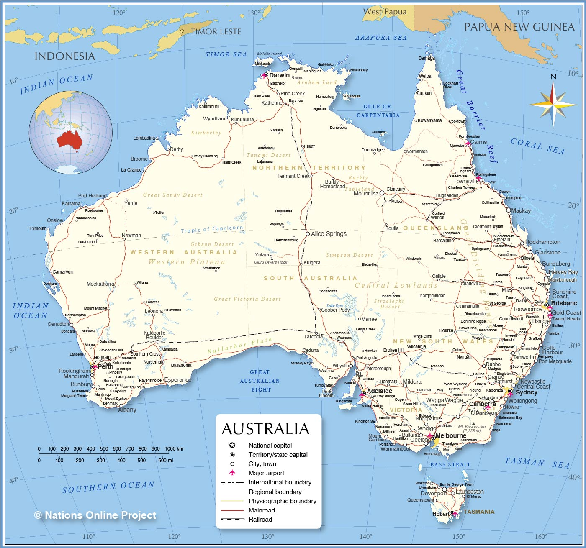
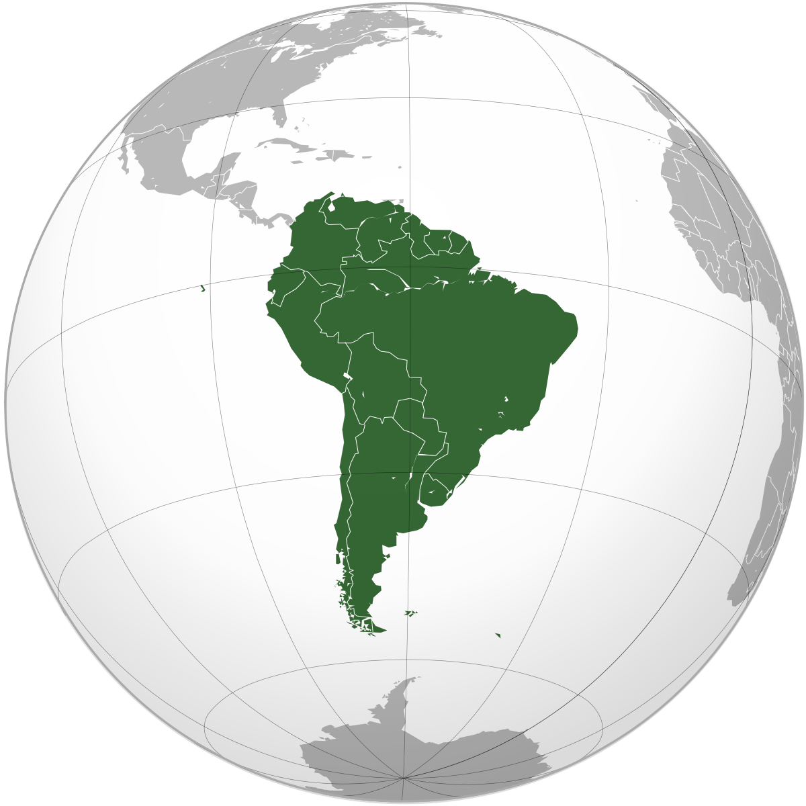

The United Nations geoscheme is a system which divides 249 countries and territories in the world into six regional, 17 subregional, and nine intermediate regional groups. It was devised by the United Nations Statistics Division (UNSD) based on the M49 coding classification.[1] The creators note that "the assignment of countries or areas to specific groupings is for statistical convenience and does not imply any assumption regarding political or other affiliation of countries or territories".[1]
Asia
Singapore has a building inspired by a Star Wars robot
There are over 1,600 temples in Kyoto, Japan
Hong Kong means fragrant harbor
China produces 45 billion pairs of chopsticks each year
South Korea has a separate Valentines Day for single people
Africa
Africa is the world's second-largest and second-most populous continent, after Asia in both aspects. At about 30.3 million km2 (11.7 million square miles) including adjacent islands, it covers 20% of Earth's land area and 6% of its total surface area.[7] With 1.4 billion people[1][2] as of 2021, it accounts for about 18% of the world's human population. Africa's population is the youngest amongst all the continents;[8][9] the median age in 2012 was 19.7, when the worldwide median age was 30.4.[10] Despite a wide range of natural resources, Africa is the least wealthy continent per capita and second-least wealthy by total wealth, ahead of Oceania. Scholars have attributed this to different factors including geography, climate, tribalism,[11] colonialism, the Cold War,[12][13] neocolonialism, lack of democracy, and corruption.[11] Despite this low concentration of wealth, recent economic expansion and the large and young population make Africa an important economic market in the broader global context.
Antartica
Antarctica (/ænˈtɑːrktɪkə/ ⓘ)[note 1] is Earth's southernmost and least-populated continent. Situated almost entirely south of the Antarctic Circle and surrounded by the Southern Ocean (also known as the Antarctic Ocean), it contains the geographic South Pole. Antarctica is the fifth-largest continent, being about 40% larger than Europe, and has an area of 14,200,000 km2 (5,500,000 sq mi). Most of Antarctica is covered by the Antarctic ice sheet, with an average thickness of 1.9 km (1.2 mi).
Austrailia

Australia, officially the Commonwealth of Australia,[17] is a sovereign country comprising the mainland of the Australian continent, the island of Tasmania, and numerous smaller islands.[18] Australia is the largest country by area in Oceania and the world's sixth-largest country. Australia is the oldest,[19] flattest,[20] and driest inhabited continent,[21][22] with the least fertile soils.[23][24] It is a megadiverse country, and its size gives it a wide variety of landscapes and climates, with deserts in the centre, tropical rainforests in the north-east, tropical savannas in the north, and mountain ranges in the south-east.
Europe
Europe is a continent[a] comprising the westernmost peninsulas of Eurasia,[12][13] located entirely in the Northern Hemisphere and mostly in the Eastern Hemisphere. It shares the continental landmass of Afro-Eurasia with both Africa and Asia. It is bordered by the Arctic Ocean to the north, the Atlantic Ocean to the west, the Mediterranean Sea to the south, and Asia to the east. Europe is commonly considered to be separated from Asia by the watershed of the Ural Mountains, the Ural River, the Caspian Sea, the Greater Caucasus, the Black Sea and the waterways of the Turkish straits.[14]
North America
North America is a continent[b] in the Northern and Western Hemispheres.[c] North America is bordered to the north by the Arctic Ocean, to the east by the Atlantic Ocean, to the southeast by South America and the Caribbean Sea, and to the west and south by the Pacific Ocean. The region includes Canada, the Caribbean, Central America, Greenland, Mexico, and the United States.
South America

South America is a continent[g] entirely in the Western Hemisphere[h] and mostly in the Southern Hemisphere, with a relatively small portion in the Northern Hemisphere at the northern tip of the continent. It can also be described as the southern subregion of a single continent called America.

.svg.png)

.svg.png)